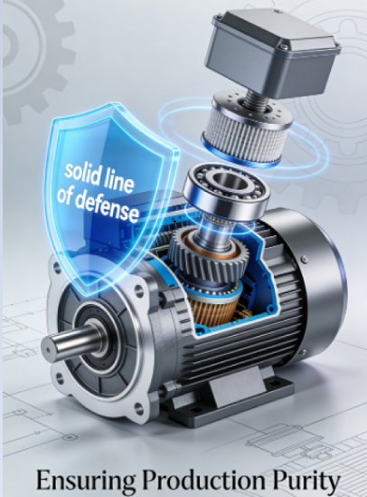
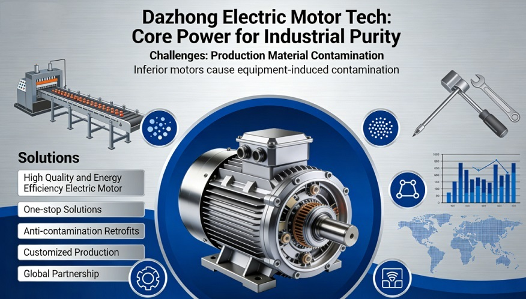
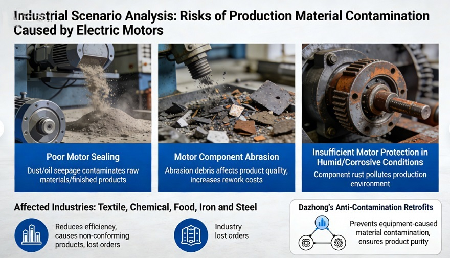
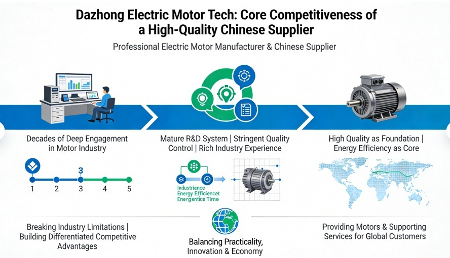
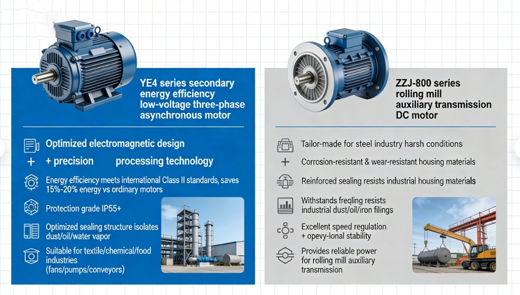
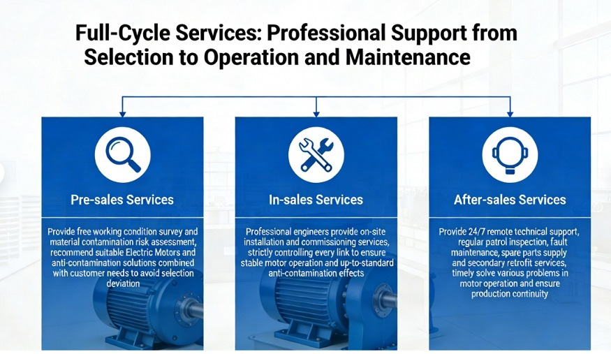
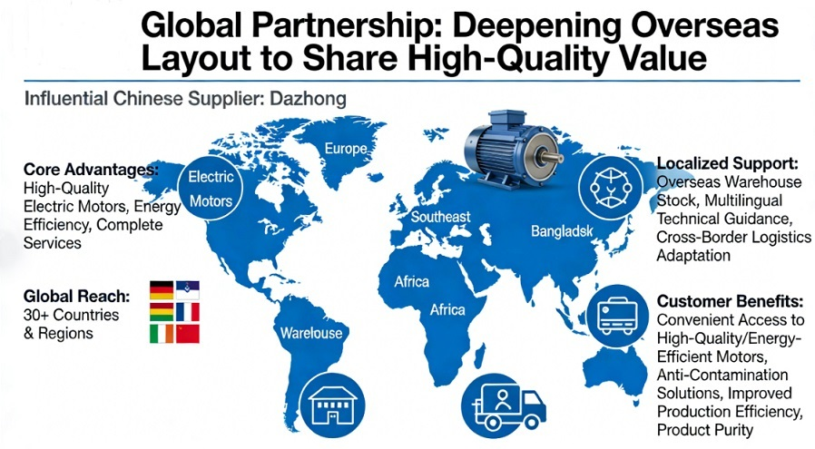

Русский
Новости компании

Защита электродвигателей от загрязнения: создание надежной защиты для чистоты производства

В промышленном производстве электродвигатель выступает как основной источник мощности и широко используется в различных эксплуатационных условиях. Однако загрязнение производственных материалов является постоянной ключевой проблемой для предприятий. Некачественные электродвигатели склонны вызывать оборудованиеобусловленное загрязнение, которое нарушает чистоту продукции. Как опытный китайский поставщик и производитель, глубоко интегрированный в индустрию, Dazhong Electric Motor Tech специализируется на поставке высококачественных и энергоэффективных электродвигателей, а также на предоставлении комплексных решений под ключ. Благодаря преимуществам в модернизации под защиту от загрязнения, индивидуальном производстве и международном партнерстве мы стали предпочтительным партнером для клиентов по всему миру.

I. Анализ промышленных сценариев: риски загрязнения производственных материалов, вызванных электродвигателями
Стабильность работы электродвигателей напрямую связана с чистотой производственных материалов в промышленных условиях. Для большинства предприятий загрязнение материалов в основном вызывается самими электродвигателями:
- Плохая герметичность электродвигателей приводит к попаданию пыли и масла в производственную систему, загрязняя сырье и готовую продукцию;
- Износ компонентов электродвигателей образует осколки, которые смешиваются с материалами, снижая качество продукции и увеличивая расходы на переработку;
- Недостаточная защита электродвигателей при влажных и коррозионных эксплуатационных условиях вызывает коррозию компонентов, загрязняя производственную среду.
Эти проблемы особенно остро стоят в таких отраслях, как текстиль, химическая промышленность, пищевая промышленность и черная металлургия. Они не только снижают производственную эффективность, но и могут привести к выпуску некондиционной продукции и потере заказов. Ключевое преимущество Dazhong Electric Motor Tech заключается в комплексном исключении таких рисков — от качества электродвигателей до услуг по модернизации. Наша модернизация под защиту от загрязнения предотвращает оборудованиеобусловленное загрязнение материалов, гарантируя чистоту продукции.

II. Dazhong Electric Motor Tech: ключевая конкурентоспособность высококачественного китайского поставщика
Как профессиональный производитель и китайский поставщик электродвигателей, Dazhong Electric Motor Tech работает в индустрии электродвигателей уже несколько десятилетий. Основываясь на зрелой системе НИОКР, строгом контроле качества и богатом промышленном опыте, мы всегда ставим высокое качество в основу, а энергоэффективность — в центр своей деятельности. Мы преодолеваем существующие ограничения отрасли, формируем дифференцированные конкурентные преимущества и балансируем практичность, инновации и экономичность. Мы предоставляем электродвигатели и сопутствующие услуги, адаптированные к различным эксплуатационным условиям, для клиентов по всему миру, демонстрируя силу и мастерство ведущего китайского поставщика.

2.1 Высококачественные электродвигатели: исключение загрязнения материалов от источника, баланс энергоэффективности и стабильности
Придерживаясь принципа «качество на первом месте», Dazhong Electric Motor Tech создала систему контроля качества на всем производственном цикле с строгими проверками на каждом этапе — от закупки сырья, производства и обработки до контроля готовой продукции. Все электродвигатели проходят несколько жестких испытаний, исключая выпуск некондиционной продукции с завода. Одновременно мы сосредотачиваемся на энергоэффективности, следуя глобальной тенденции энергосбережения и снижения потребления, и достигаем триединства «качество, энергосбережение, защита от загрязнения».
При выборе сырья мы отдаем предпочтение высокочистым медным катушкам, высококачественным термостойким изоляционным материалам и уплотнительным элементам военного класса. Это не только улучшает электропроводимость и срок службы электродвигателей, но и снижает от источника количество загрязняющих веществ (пыль, осколки, масло), образующихся при работе электродвигателя из-за износа компонентов и нарушения герметичности, исключая принципиально риск оборудованиеобусловленного загрязнения материалов.
В нашей основной продуктовой линейке два флагманских модели ярко демонстрируют преимущества высокого качества и защиты от загрязнения, адаптируясь к потребностям различных высокотехнологичных эксплуатационных условий:
- Серия YE4: трехфазные асинхронные электродвигатели низкого напряжения второго класса энергоэффективности: выполнены по оптимизированной электромагнитной конструкции и технологии точной обработки, их показатели энергоэффективности полностью соответствуют международным стандартам второго класса, потребляют на 15–20% меньше энергии по сравнению с обычными электродвигателями и значительно снижают энергетические расходы предприятий. С защитным классом IP55 и выше, их герметичная конструкция специально оптимизирована для эффективной изоляции от таких загрязняющих веществ, как пыль, масло, водяной пар. Подходят для сценариев с чрезвычайно высокими требованиями к чистоте материалов (текстильная, химическая, пищевая промышленность) и широко используются на вспомогательном производственном оборудовании (вентиляторы, насосы, конвейеры). Они не только удовлетворяют потребность в эффективной работе, но и гарантируют чистоту производственных материалов, заслужив широкое признание клиентов по всему миру.
- Серия ZZJ-800: постоянного тока электродвигатели для помощнительной передачи прокатных станов: разработаны специально для суровых эксплуатационных условий (черная металлургия) и выдерживают жесткие требования (частые запуски и остановки, работа под тяжелой нагрузкой). Корпус электродвигателя изготовлен из коррозионностойких и износостойких материалов, герметичная конструкция специально усилена для эффективного сопротивления вторжению промышленной пыли, масла, металлических стружек и других загрязняющих веществ, предотвращая загрязнение сырья и готовой продукции прокатного производства. Одновременно они обладают отличными характеристиками регулировки скорости и стабильностью работы, обеспечивая надежное энергетическое обеспечение для системы помощнительной передачи прокатного стана и демонстрируя высокое качество производства Dazhong Electric Motor Tech.
2.2 Индивидуальное производство: точная адаптация к различным эксплуатационным условиям, удовлетворение индивидуальных потребностей в защите от загрязнения
Различные отрасли и производственные сценарии имеют существенные различия в требованиях к мощности, скорости вращения, защитному классу электродвигателей и стандартам защиты от загрязнения. Стандартизированные электродвигатели часто не могут полностью адаптироваться и даже могут усугубить загрязнение материалов. Как профессиональный китайский поставщик, Dazhong Electric Motor Tech основываясь на продвинутой системе индивидуального производства и профессиональной команде НИОКР, преодолевает ограничения стандартизированной продукции. Мы предоставляем индивидуальные решения по разработке электродвигателей для клиентов по всему миру, точно удовлетворяя различные индивидуальные потребности в защите от загрязнения и энергоэффективности.
Услуги индивидуального производства сопровождаются профессиональной технической командой на всем этапе. Каждый шаг — от предварительного обследования эксплуатационных условий и оценки риска загрязнения до точного подбора параметров электродвигателя (мощность, скорость вращения, защитный класс) и индивидуального проектирования конструкции защиты от загрязнения — соответствует фактическим производственным потребностям клиентов. Независимо от того, требуются ли электродвигатели с усиленной герметичностью и коррозионной защитой для влажных и коррозионных условий текстильно-отделочных цехов, специальные электродвигатели с термостойкостью и защитой от вторжения осколков для пыльных условий черной металлургии, или чистые электродвигатели без утечки масла и пыли для пищевой промышленности — Dazhong Electric Motor Tech создает высокоадаптированные электродвигатели через индивидуальное производство, балансируя потребности в энергоэффективности и защите от загрязнения и помогая предприятиям улучшить качество продукции.
2.3 Услуги модернизации под защиту от загрязнения: целенаправленное решение проблемы загрязнения материалов, снижение инвестиционных расходов предприятий
Учитывая фактическую ситуацию, когда старые электродвигатели склонны вызывать загрязнение материалов, Dazhong Electric Motor Tech запустила эксклюзивные услуги модернизации под защиту от загрязнения. Мы можем nângить характеристики электродвигателей по защите от загрязнения без замены на новые модели, значительно снижая инвестиционные расходы предприятий на оборудование при сохранении преимуществ высокоэффективной работы электродвигателей.
В процессе модернизации мы используем уплотнительные материалы военного класса, оптимизируем технологию герметизации корпуса электродвигателя, модернизируем изоляционную и защитную конструкцию, точно блокируя попадание пыли, масла, коррозионных осколков и других загрязняющих веществ в производственную систему, что полностью решает проблему оборудованиеобусловленного загрязнения материалов. Мы действительно реализуем главную цель: модернизация под защиту от загрязнения предотвращает оборудованиеобусловленное загрязнение материалов, гарантируя чистоту продукции. Кроме того, наша команда по модернизации имеет богатый промышленный опыт и может разработать индивидуальные решения по модернизации для различных моделей электродвигателей и эксплуатационных условий. Процесс модернизации эффективный и быстрый, минимизируя влияние на производственный график предприятий. После модернизации мы также предоставляем полную послепродажную гарантию, обеспечивая долгую стабильную работу электродвигателей.

III. Комплексные услуги на всем жизненном цикле & международное партнерство: всестороннее обеспечение беспроблемной работы
Dazhong Electric Motor Tech не только сосредотачивает внимание на разработке и производстве высококачественных электродвигателей, но и придает большое значение формированию комплексных услуг на всем жизненном цикле и международного партнерства, предоставляя клиентам беспроблемное гарантийное обеспечение под ключ и демонстрируя силу и искренность ведущего китайского поставщика.
3.1 Комплексные услуги на всем жизненном цикле: профессиональное сопровождение от выбора до эксплуатации и технического обслуживания
- Предпродажное обслуживание: бесплатное обследование эксплуатационных условий и оценка риска загрязнения материалов, рекомендация подходящих электродвигателей и решений по защите от загрязнения с учетом потребностей клиентов, исключение ошибок при выборе;
- Продажное обслуживание: профессиональные инженеры предоставляют услуги по местной установке и пусконаладке, строго контролируя каждый этап для гарантии стабильной работы электродвигателей и соответствия эффекта защиты от загрязнения стандартам;
- Послепродажное обслуживание: круглосуточное дистанционное техническое поддержание, регулярные патрульные проверки, ремонт неисправностей, поставка запасных частей и повторная модернизация, своевременное решение различных проблем при работе электродвигателей и гарантия непрерывности производства.

3.2 Международное партнерство: углубление международного присутствия, совместное освоение высококачественной ценности
Как влиятельный китайский поставщик, Dazhong Electric Motor Tech активно расширяет свое международное партнерство. Основываясь на высококачественных электродвигателях, преимуществах по энергоэффективности и полном комплексе услуг, мы установили долгосрочные стабильные партнерские отношения с
предприятиями более чем в 30 странах и регионах .
Мы предоставляем локальное сервисное поддержание, включая наличие запасов в зарубежных складах, многоязычную техническую консультацию и адаптацию к трансграничной логистике, исключая барьеры трансграничного сотрудничества. Мы обеспечиваем глобальным клиентам удобный доступ к высококачественным, энергоэффективным электродвигателям и решениям по защите от загрязнения, помогая предприятиям улучшить производственную эффективность и гарантировать чистоту продукции.
IV. Часто задаваемые вопросы (FAQ)
В1: Для каких эксплуатационных условий с высоким риском загрязнения материалов подходят электродвигатели Dazhong Electric Motor Tech?
Ответ: Наши электродвигатели широко подходят для эксплуатационных условий текстильной, химической, пищевой, черной металлургической и горнодобывающей отраслей. Особенно для сценариев с высоким риском загрязнения материалов мы разработали эксклюзивные конструкции защиты от загрязнения и услуги модернизации.
В2: Будет ли модернизация под защиту от загрязнения влиять на энергоэффективность электродвигателей?
Ответ: Нет. Конструкция электродвигателя, отвечающая за энергоэффективность, оптимизируется одновременно в процессе модернизации. Это не только исключает загрязнение материалов, но и повышает энергоэффективность некоторых моделей на 5–8%, достигая двойного эффекта: защиты от загрязнения и энергосбережения.
В3: Каковы ключевые преимущества электродвигателей серии YE4 ?
Ответ: Ключевые преимущества — второй класс энергоэффективности, высокий защитный класс IP55, отличная герметичность, эффективная предотвращение загрязнения материалов, адаптация к различным обычным и промышленным сценариям, высокая соотношение цена-качество.
В4: В каких областях преимущественно используется электродвигатель серии ZZJ-800 для помощнительной передачи прокатных станов?
Ответ: Преимущественно используется в черной металлургии, адаптирован для оборудования помощнительной передачи прокатных станов, рабочих роликовых столов, резательных машин. Способен стабильно работать при суровых эксплуатационных условиях и предотвращать загрязнение производственных материалов промышленной пылью.
В5: Каков производственный цикл индивидуально изготовляемых электродвигателей?
Ответ: Производственный цикл для стандартных индивидуальных решений — 7–15 рабочих дней, для сложных эксплуатационных условий и индивидуализации специальных функций — 20–30 рабочих дней. Цикл для срочных заказов может быть сокращен по договоренности.
В6: Как китайский поставщик Dazhong Electric Motor Tech гарантирует соответствие своих продуктов международному рынку?
Ответ: Все электродвигатели соответствуют международным стандартам энергоэффективности и соответствующим спецификациям по взрывобезопасности и защите. Мы выдаем всемирно признанные тестовые отчеты на основе авторитетных независимых испытательных институтов, удовлетворяя требованиям доступа к глобальному рынку.
В7: Применимы ли услуги модернизации под защиту от загрязнения ко всем типам электродвигателей?
Ответ: Применимы к большинству промышленных электродвигателей, включая трехфазные асинхронные, постоянного тока и синхронные с постоянными магнитами. Для специальных моделей можно разработать индивидуальные решения по модернизации.
В8: Какие локальные услуги предоставляет международное партнерство Dazhong Electric Motor Tech?
Ответ: Мы предоставляем наличие запасов в зарубежных складах, местную установку и пусконаладку, многоязычную техническую консультацию, регулярные патрульные проверки и техническое обслуживание, сокращая производственный цикл поставки и снижая расходы на трансграничное сотрудничество.
В9: Каков срок гарантии на высококачественные электродвигатели?
Ответ: Максимальный срок гарантии на сам электродвигатель — 5 лет, на компоненты, установленные при модернизации под защиту от загрязнения — 2 года, на весь период предоставляется профессиональное послепродажное сопровождение.
В10: Как определить, нуждаются ли собственные эксплуатационные условия в модернизации электродвигателей под защиту от загрязнения?
Ответ: Вы можете связаться с нами для бесплатной оценки эксплуатационных условий. Мы точно определим необходимость модернизации и разработаем соответствующее решение с учетом типа производственных материалов и рабочей среды (пыль, масло и др.).
0users like this.